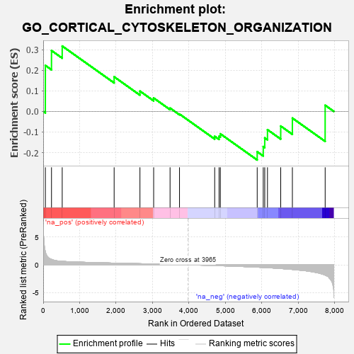
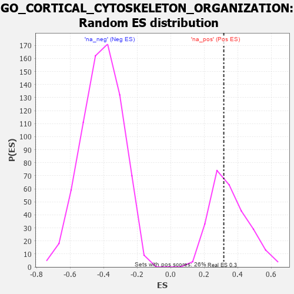

| | | Dataset | 7d |
| Phenotype | NoPhenotypeAvailable |
| Upregulated in class | na_pos |
| GeneSet | GO_CORTICAL_CYTOSKELETON_ORGANIZATION |
| Enrichment Score (ES) | 0.317253 |
| Normalized Enrichment Score (NES) | 0.9020008 |
| Nominal p-value | 0.5741445 |
| FDR q-value | 0.84245604 |
| FWER p-Value | 1.0 |
Table: GSEA Results Summary

Fig 1: Enrichment plot: GO_CORTICAL_CYTOSKELETON_ORGANIZATION
Profile of the Running ES Score & Positions of GeneSet Members on the Rank Ordered List
| PROBE | GENE SYMBOL | GENE_TITLE | RANK IN GENE LIST | RANK METRIC SCORE | RUNNING ES | CORE ENRICHMENT | | 1 | RAC2 | | | 60 | 2.442 | 0.2231 | Yes |
| 2 | RHOH | | | 228 | 0.987 | 0.2954 | Yes |
| 3 | KIF23 | | | 522 | 0.622 | 0.3173 | Yes |
| 4 | FMNL2 | | | 1946 | 0.314 | 0.1680 | No |
| 5 | VPS4A | | | 2654 | 0.205 | 0.0984 | No |
| 6 | TLN1 | | | 3030 | 0.145 | 0.0650 | No |
| 7 | CDK5 | | | 3480 | 0.080 | 0.0161 | No |
| 8 | FMNL3 | | | 3739 | 0.036 | -0.0129 | No |
| 9 | ARF6 | | | 4704 | -0.140 | -0.1210 | No |
| 10 | WDR1 | | | 4824 | -0.163 | -0.1205 | No |
| 11 | DLG1 | | | 4860 | -0.169 | -0.1090 | No |
| 12 | RAB13 | | | 5870 | -0.425 | -0.1957 | No |
| 13 | RAC1 | | | 6036 | -0.484 | -0.1707 | No |
| 14 | CALR | | | 6077 | -0.499 | -0.1286 | No |
| 15 | ROCK1 | | | 6152 | -0.520 | -0.0888 | No |
| 16 | TRPV4 | | | 6515 | -0.668 | -0.0712 | No |
| 17 | FHOD3 | | | 6835 | -0.834 | -0.0326 | No |
| 18 | PLS1 | | | 7734 | -1.855 | 0.0298 | No |
Table: GSEA details [plain text format]

Fig 2: GO_CORTICAL_CYTOSKELETON_ORGANIZATION: Random ES distribution
Gene set null distribution of ES for GO_CORTICAL_CYTOSKELETON_ORGANIZATION